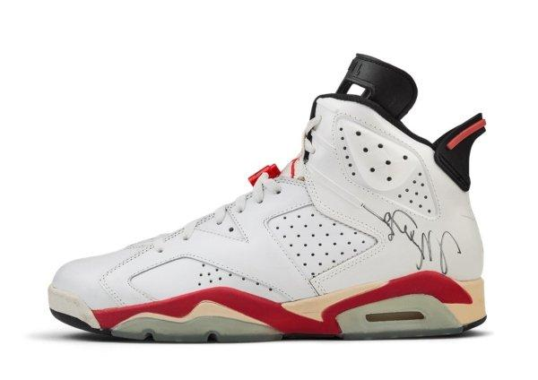

História do Air Jordan 6:
O Air Jordan 6 foi lançado em 1991 e marcou um momento histórico: foi o tênis que Michael Jordan usou para conquistar seu primeiro título da NBA com o Chicago Bulls. Mais uma vez, o design ficou por conta de Tinker Hatfield, que buscou equilibrar performance, estilo e inovação.
Entre os destaques do modelo estão o reforço no calcanhar para facilitar o calce, a lingueta com furos (tipo alça), o solado translúcido e o uso de formas geométricas inspiradas em carros esportivos, especialmente no design do calcanhar e do spoiler traseiro.
O AJ6 também se destacou por seu conforto e estilo versátil, sendo rapidamente adotado fora das quadras. Ao vencer o campeonato com ele nos pés, Jordan transformou o AJ6 em um símbolo de conquista e excelência.